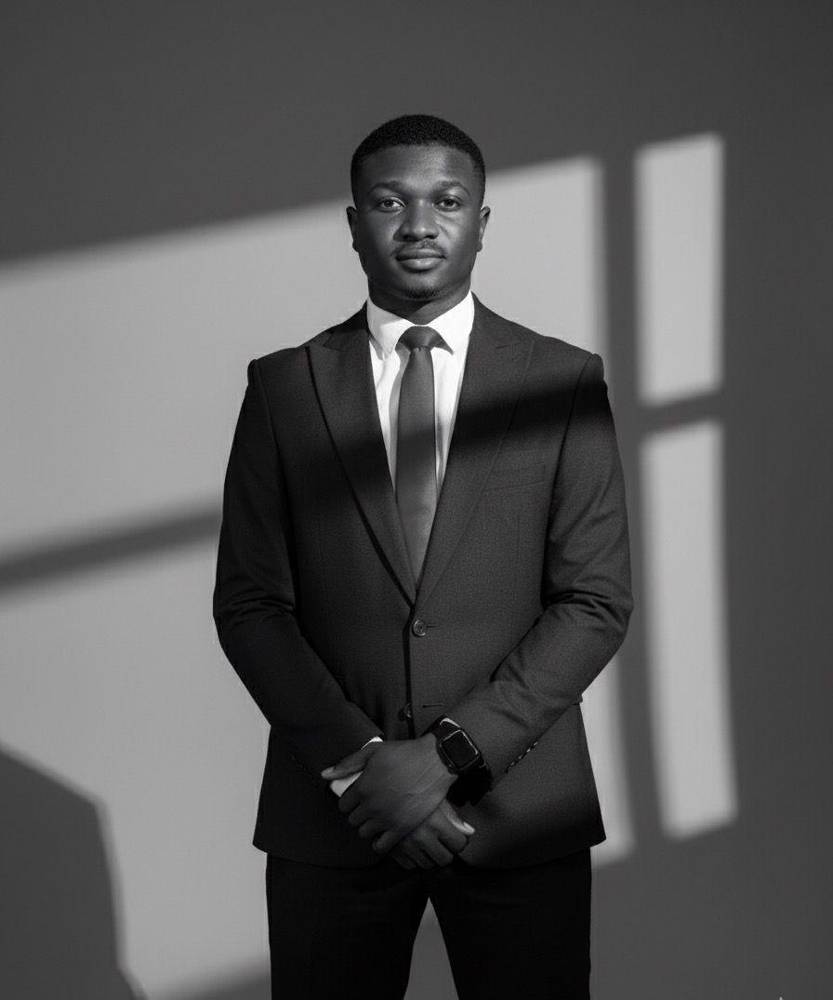
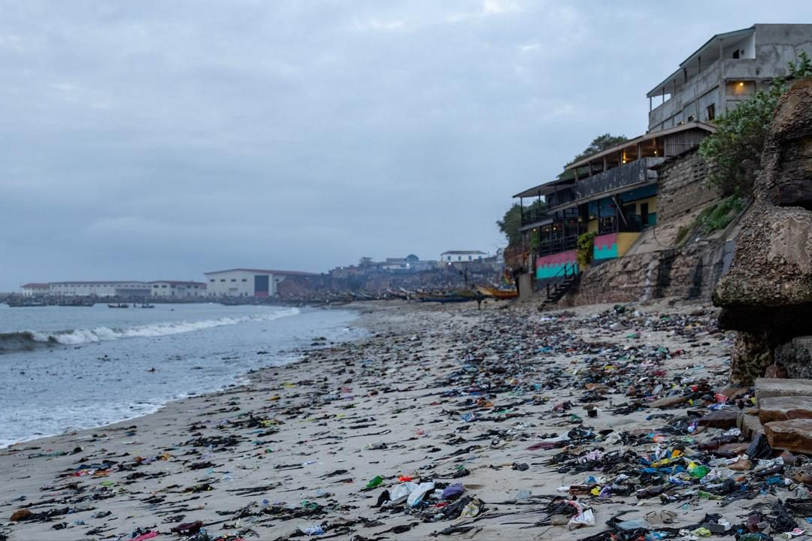
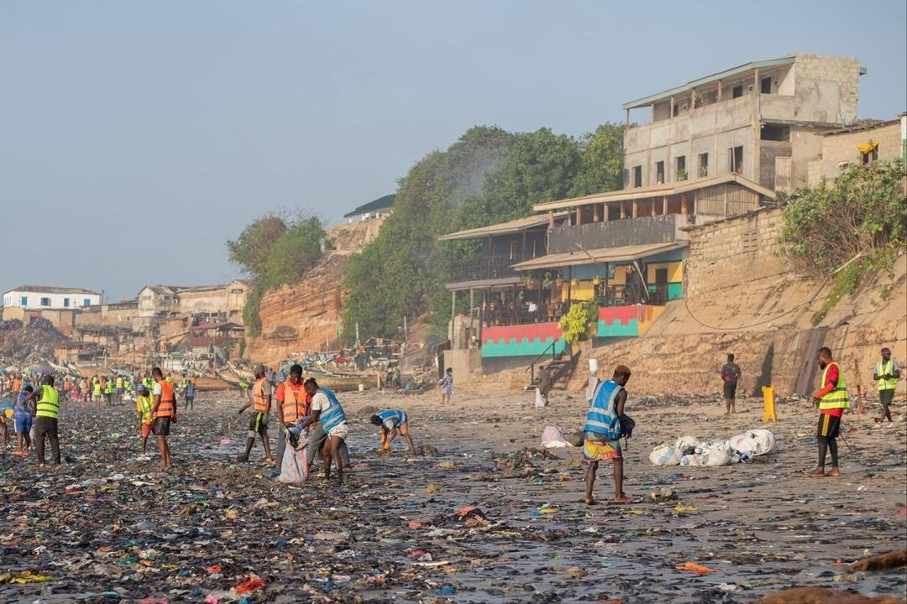

Built Environment
Facilities management, project management, property performance, operational efficiency and stakeholder management.
Real Estate & Built Environment Professional · Nigeria
I explore how environmental and financial performance can reinforce each other in Africa's built environment, and how sustainability can be considered earlier in the decisions that shape buildings and infrastructure.
CFM · FMP · PMP
Head, Building Management at Tengen Properties

Evidence, not claims. My work explores how better decisions can improve environmental performance while making financial sense. How I label results
Facilities management, project management, property performance, operational efficiency and stakeholder management.
Practical ways to reduce resource waste, improve building performance and make environmental improvements financially compelling.
Knowledge-sharing, capability-building and solutions that can continue beyond individual interventions.
My Story
My journey into sustainability did not begin with climate policy. It developed through education, real estate and experiences that changed the questions I ask about the environments people live and work in.
My mother made education a priority for her children. My own path was not straightforward. I progressed through a National Diploma and Higher National Diploma before completing my bachelor's degree at Bells University of Technology, graduating as the best student in my class with a CGPA of 4.64/5.00.
That journey taught me the value of finding another path when the first is unclear. It also shaped my belief that useful knowledge should be shared. In 2020, I worked with 70 senior secondary students in Asese, Ogun State, sharing study strategies that had helped me academically. The following year, 42 of those students gained university admission.
Another experience changed how I thought about environmental responsibility.
After losing my best friend to drowning at Elegushi Beach in Lagos, I avoided beaches and large bodies of water. In 2025, I returned to the coastline while volunteering at a beach cleanup with The OR Foundation in Accra. Clearing textile and plastic waste while reflecting on nearby Jamestown made environmental issues feel less abstract. I began thinking more deeply about how environmental conditions affect people differently and what responsibility professionals have when their decisions shape those conditions.


Today, I bring those questions into my work in the built environment. My goal is to move beyond addressing inefficiencies after buildings are operational and contribute earlier, when decisions about design, energy, resources and resilience can still be influenced.
My Work · Flagship case study
Knight Frank Nigeria · 2025
While working at Knight Frank Nigeria in 2025, I took the initiative to address operational losses at Benin City Mall, which were approximately USD 3,200 per month.
Energy expenditure was creating pressure for tenants, while further investment required a convincing financial case. I wanted to understand where the building was wasting resources before recommending additional expenditure.
My review identified inefficient cooling and lighting practices. Air-conditioning systems were running overnight in areas with little or no activity, and outdated lighting was consuming unnecessary electricity.
Observed in assessmentUSD 13,714 projected savings over three years. Projected
I approached the assignment as a financial problem. The experience showed me that reducing environmental waste and improving financial performance do not always have to compete. With the right evidence, they can reinforce each other.
What I'm Building
My work at Benin City Mall raised a larger question: could the same evidence-led approach become a repeatable model for improving environmental and financial performance across other properties?
I am exploring a model that would help property owners and institutions understand how their buildings currently perform, identify improvement opportunities, and prioritise interventions that make environmental and financial sense.
Current stage
Having recently joined Tengen Properties as Head, Building Management, I have identified its facility as a potential first pilot, subject to internal approval. My current professional environment sits within a broader business ecosystem with property interests across Africa. This creates an opportunity to test the approach in one facility, refine the methodology and explore whether it can be applied elsewhere.
Education & Impact
Bells University of Technology, Ota
My educational journey taught me that achievement is not always about beginning with the clearest path. After progressing through National Diploma and Higher National Diploma qualifications, including an HND in Estate Management from Yaba College of Technology, I continued to a bachelor's degree and graduated at the top of my class. The experience strengthened my discipline, resourcefulness and willingness to change direction when better information became available.
Passing knowledge forward
In 2020, I worked with 70 senior secondary students in Asese, Ogun State, sharing practical study strategies that had helped me academically. The following year, 42 of those students gained university admission.
Teaching
In 2024 and 2025, I taught cohorts of the Knight Frank Academy on Facilities Management, Project Management and an Introduction to Sustainability.
Ideas
Facilities-management teams often inherit the consequences of decisions made years before a building becomes operational. Why operating teams inherit choices they did not make, why retrofitting can be expensive, and what earlier decisions could mean for Nigerian and African cities.
Environmental proposals can fail when decision-makers hear only the environmental argument. Evidence on cost, payback, asset performance and tenant experience can make action easier to justify.
How can we make environmentally responsible decisions easier for property owners and investors to justify?
Building Differently
A measurable progression, from improving existing buildings to influencing decisions earlier.
I play whenever I get the chance. It's my favourite way to switch off after a long week.
Usually what's playing on the drive to site, or at the end of a long day.
Testimonials
Contact
Property owners, collaborators and anyone interested in making buildings perform better, environmentally and financially, are welcome to get in touch.
Just tap send. I'll reply as soon as I can.